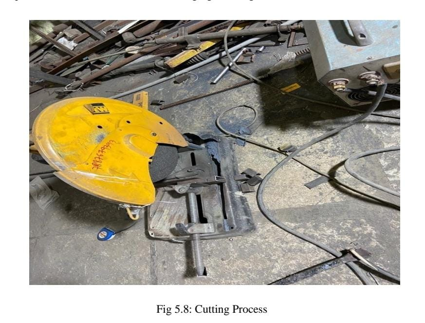

Fabrication
The required Fabrication processes, viz cutting Grinding Drilling Welding Punching were identified and implemented as per design requirement. Grinding machine was used for cutting of all the parts like the angle, Sheetmetal etc. Metal Arc welding is a fusion welding process used to join metals. An electric arc from an DC power supply creates an intense heat of around 6500°F which melts the metal at the join between two work pieces is used for joining parts of frame. Drilling operation is used for drill the hole in the bogies. After Punching that hole can be used to attach nut and bolts which is used for maintaining constant distance between bogies. Punching operation is used for to punch the hole in the Sheetmetal which is stand for the hopper and also for the Arduino circuit which is placed on that Sheet. The ball bearings are used to bogies to pull the bogies with the help of dc motor. To connect dc motor and bogies thin metal wire is used. Plastic mould is used as hopper to reduce the overall cost of the fabrication. Some standard parts were bought like aurdino circuit, dc motor, submersible pump. Ms steel is used to fabricate this project.

Frame
A framed structure is a structure having the combination of beam and column to resist gravity and other lateral loads. These structures are generally used to overcome the large forces, moments developing due to the applied loading. During Fabrication of a Frame the material which is used for Fabrication process is mild steel. We have used 25 x 25 x 3mm angle for the manufacturing of frame. The operations that are perform during fabrication of frame is Cutting operation, The Grinding Machine is used for the cutting purpose from this proper dimensional part get fabricated. The frame mainly consist of 6 angel have equal length of 4 feet and 2 angel of 2 feet. After that the joining process perform on the frame, with the help of metal arc welding process the all cutting parts are get welded. By using these steps the assembly of frame get completed. Frame Specification = 142 ×31 ×112 cm.

Bogies
The primary function of the bogie is to give support to the body; to provide stability in curved and straight tracks; to provide smooth ride through the absorption of vibration. This is a set of wheels fitted under a Body or a locomotive for transporting goods or food. MS sheet metal is used for the fabrication of bogie .plates can be cut with the help of a grinding machine and joined with the help of a metal arc welding. for the movement of bogie over the frame the rolling bearing can be used for that Four holes can be done with the help of a drilling operation, The drilled hole are used to attach the nut and bolt and bearing assembly to maintain a constant contact with frame, also the nut bolt assembly is used to maintain the constant distance between two bogies. Bogie Specification = 30×13 cm.

Water Storage Tank
The purpose of water storage tanks is usually to maintain water service pressure, maintain emergency storage supply and pressure during power outages, and provide equalization volume to meet peak demands. Storage tanks serve two major purposes. One is to provide storage volume and the other is to provide pressure to the distribution system. A particular tank can serve one or both purposes depending on its location within the system and its type of configuration. During the fabrication of water storage tank MS sheet metal is used With the help of a grinding machine cutting operation on sheet metal is performed. The sheet metal is cut according to required dimensions, then with the help of metal arc welding the part which is cut during cutting process is get welded. The foundation of water storage tank is get completed having capacity of 4 litre. The function of this water storage tank is to provide the required amount of water in front of cattle. Submersible pump is used to pump the water form tank to feed the cow. Water Storage Tank Specification = 30×17 cm.

Arduino Circuit
Arduino is an open-source platform used for building electronics projects. Arduino consists of both a physical programmable circuit board (often referred to as a microcontroller) and a piece of software, or IDE (Integrated Development Environment) that runs on your computer, used to write and upload computer code to the physical board. The Arduino platform has become quite popular with people just starting out with electronics, and for good reason. Unlike most previous programmable circuit boards, the Arduino does not need a separate piece of hardware (called a programmer) in order to load new code onto the board -- you can simply use a USB cable. Additionally, the Arduino IDE uses a simplified version of C++, making it easier to learn to program. Finally, Arduino provides a standard form factor that breaks out the functions of the microcontroller into a more accessible package.

Process Sheet
Following operations were while fabricate the project
1.Cutting
Cutting is the separation or opening of a physical object, into two or more portions, through the application of an acutely directed force. Implements commonly used for cutting are the knife and saw, or in medicine and science the scalpel and microtome. However, any sufficiently sharp object is capable of cutting if it has a hardness sufficiently larger than the object being cut, and if it is applied with sufficient force. Even liquids can be used to cut things when applied with sufficient force (see water jet cutter). The material as our required size. The machine used for this operation is power chop saw. A power chop saw, also known as a drop saw, is a power tool used to make a quick, accurate crosscut in a work piece at a selected angle. Common uses include framing operations and the cutting of moulding. Most chop saws are relatively small and portable, with common blade sizes ranging from eight to twelve inches.
2.Drilling
Drilling is a cutting process that uses a drill bit to cut a hole of circular cross-section in solid materials. The drill bit is usually a rotary cutting tool, often multi-point. The bit is pressed against the work-piece and rotated at rates from hundreds to thousands of revolutions per minute. This forces the cutting edge against the work-piece, cutting off chips (swarf) from the hole as it is drilled. In rock drilling, the hole is usually not made through a circular cutting motion, though the bit is usually rotated. Instead, the hole is usually made by hammering a drill bit into the hole with quickly repeated short movements. The hammering action can be performed from outside the hole (tophammer drill) or within the hole (down-the-hole drill, DTH). Drills used for horizontal drilling are called drifter drills.

Drilled holes are characterized by their sharp edge on the entrance side and the presence of burrs on the exit side (unless they have been removed). Also, the inside of the hole usually has helical feed marks. Drilling may affect the mechanical properties of the work piece by creating low residual stresses around the hole opening and a very thin layer of highly stressed and disturbed material on the newly formed surface. This causes the work piece to become more susceptible to corrosion and crack propagation at the stressed surface. A finish operation may be done to avoid these detrimental conditions. For fluted drill bits, any chips are removed via the flutes. Chips may form long spirals or small flakes, depending on the material, and process parameters. The type of chips formed can be an indicator of the machinability of the material, with long chips suggesting good material machinability.

3.Welding
Welding is a fabrication or sculptural process that joins materials, usually metals or thermoplastics, by using high heat to melt the parts together and allowing them to cool causing fusion. Welding is distinct from lower temperature metal-joining techniques such as brazing and soldering, which do not melt the base metal. In addition to melting the base metal, a filler material is typically added to the joint to form a pool of molten material (the weld pool) that cools to form a joint that, based on weld configuration (butt, full penetration, fillet, etc.), can be stronger than the base material (parent metal). Pressure may also be used in conjunction with heat, or by itself, to produce a weld. Welding also requires a form of shield to protect the filler metals or melted metals from being contaminated or oxidized. Square pipes of different lengths to make frame. The machine used for this operation is electric arc welding. Electrical arc welding is the procedure used to join two metal parts, taking advantage of the heat developed by the electric arc that forms between an electrode (metal filler) and the material to be welded. The welding arc may be powered by an alternating current generator machine (welder). This welding machine is basically a single phase static transformer Suitable for melting RUTILE (sliding) acid electrodes. Alkaline electrodes may also be melted by alternating current if the secondary open-circuit voltage is greater than 70 V. The welding current is continuously regulated (magnetic dispersion) by turning the hand wheel on the outside of the machine, which makes it possible to select the current value, indicated on a special graded scale, with the utmost precision. To prevent the service capacities from being exceeded, all of our machines are fitted with an automatic overload protection which cuts of the power supply (intermittent use) in the event of an overload. The operator must then wait for a few minutes before returning to work. This welding machine must be used only for the purpose described in this manual. Read the entire contents of this manual before installing, using or servicing the equipment, paying special attention to the chapter on safety precautions. Contact your distributor if you do not fully understand these instructions. The time required for this operation is 120 minutes

Safety Precaution
The following points should be considered for the safe operation of machine and to avoid accidents: -
- • All the parts of the machine should be checked to be in perfect alignment.
- • All the nuts and bolts should be perfectly tightened.
- • The operating switch should be located at convenient distance from the operator so as to control the machine easily.
- • The inspection and maintenance of the machine should be done from time to time.
- • All the nuts and bolts should be perfectly tightened.
- • The operating switch should be located at convenient distance from the operator so as to control the machine easily.
- • The inspection and maintenance of the machine should be done from time to time.
Outcome
•This automatic cow feeding machine reduces the human effort and saves time.
• This feeding machine performs variety of task at same time like giving feed as well as water to cow.
• There is no need of physical appearance of feeder once we set the data in the device.
• Cost outcome:
This machine costs near about 15000rs. When we use conventional method for feeding the cattle so, according to survey we noticed that labour can charge about 400rs per day which is near about 12000rs per month. Instead of this convectional method suppose we use this machine for feeding cattle then this machine returns the cost of itself in near about 38 days and after 38 days it gives profit.
Life of this machine is near about 5 years.
Electricity charge =20000rs/year*5=1 lakh
Maintenance cost =15000rs/year*5=75000rs.
Machine profit = 95800rs/year.\
COST ESTIMATION:
Cost estimation may be defined as the process of forecasting the expenses that must be incurred to manufacture a product. These expenses take into a consideration all expenditure involved in a design and manufacturing with all related services facilities such as pattern making, tool, making as well as a portion of the general administrative and selling costs.
PURPOSE OF COST ESTIMATION:
1. To determine the selling price of a product for a quotation or contract so as to ensure a reasonable profit to the company.
2. Check the quotation supplied by vendors.
3. Determine the most economical process or material to manufacture the product.
4. To determine standards of production performance that may be used to control the cost.
TYPES OF COST ESTIMATION:
1. Material cost
2. Machining cost
Material Cost Estimation
Material cost estimation gives the total amount required to collect the raw material which has to be processed or fabricated to desired size and functioning of the components.
These materials are divided into two categories.
1. Material for fabrication:
In this the material in obtained in raw condition and is manufactured or processed to finished size for proper functioning of the component.
2. Standard purchased parts:
This includes the parts which was readily available in the market like Allen screws etc. A list is forecast by the estimation stating the quality, size and standard parts, the weight of raw material and cost per kg. For the fabricated parts.
Machining Cost Estimation
This cost estimation is an attempt to forecast the total expenses that may include manufacturing apart from material cost. Cost estimation of manufactured parts can be considered as judgment on and after careful consideration which includes labour, material and factory services required to produce the required part.
PROCEDURE FOR CALCULATION OF MATERIAL COST:
The general procedure for calculation of material cost estimation is after designing a project,
1. A bill of material is prepared which is divided into two categories.
a. Fabricated components
b. Standard purchased components
2. The rates of all standard items are taken and added up.
3. Cost of raw material purchased taken and added up.
COST ESTIMATION:
| SR.NO | PART | TOTAL COST |
| 1 | M.S Frame Material | 3000 |
| 2 | Motor | 850 |
| 3 | Arduino | 600 |
| 4 | wheels | 1200 |
| 5 | Fabrication | 1500 |
| 6 | Pump | 950 |
| Total | 8100 |